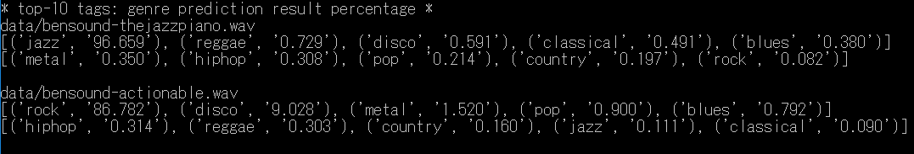
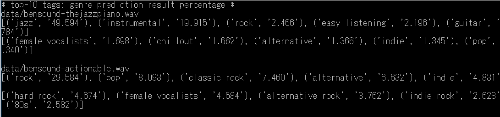

音楽のジャンル分け
概要
音楽のジャンル分け（タグ付け）としてChoi氏のMusic auto-tagging using kerasがある。
ここでは、その派生でジャンル数を50から10へ変更した Music Genre Classification with Deep Learningの
CRNNモデルをChainer用にリメイクする。
互換性の問題
gru
オリジナルで使われているKeras/TheanoとChainerの間ではGRUの計算式が異なる。
GRUは、Keras/Theanoに似せた計算式へ変更したものを準備した。（gru2.py)
Batch Normalization(BN)
Batch Normalization(BN) については、移動平均の方法や定数が異なるところがあり、Chainer対応してもまったく同じ動作にならない。
暫定として平均値と分散の初期値を設定できるものを準備した。(batch_normalization2.py)
Keras 1.0.6とそれ以降では、BNに互換性が無い（挙動が違う）ようである。CNNモデルの方は1.0.6でないと正しく動かない。CNNモデルは分散の値を２乗するように変更した。
美しくないが、Kerasの BNのmode=2に似た動作にするため、テスト時に動的にBNを計算するためのフラグも追加した。
conv
保存されたconv層の重み係数の配置が逆になっている。
その他の留意点
windows上でのTheano optimization failedを回避するため、
import theano
theano.config.optimizer='None'
をオリジナルに追加して動作確認した。
音楽のジャンル分け
Music Genre Classification with Deep LearningのCRNNモデル（ジャンル数10）と
Music auto-tagging using kerasの初期のCNNモデル（BNにmode2を使っているもの、ジャンル数50）仮称CNN0モデルと、
Music auto-tagging using kerasのCNNモデル（その後BNがmode=0に変更されている）の3種類の重みを使って2曲の予測実験をしてみた。
CNNモデルの結果は不安定？でどことなく怪しいところがあるような気がしている。
CRNNモデルによる予測の結果の例
python3 music-tagger-test.py

CNNモデルによる予測の結果の例
python3 music-tagger-test.py -m CNN0

python3 music-tagger-test.py -m CNN

内容
- h5_load.py githubで公開されているkeras用の重みファイルを読み込むためのもの。
- music-tagger-test.py 引数に --en を追加するとkeras用の重みファイルを読み込む。テストする曲を変更するときはaudio_pathsを書き換える。
- /data Chainer用の重みモデルファイルなど。
参照したもの
- Music auto-tagging using kerasの初期のリポジトリ
- Music Genre Classification with Deep Learning
- GTZAN Genre Collection, Data Set 10分類各100個、合計1000個の音源セット（長さは30秒）
- ROYALTY FREE MUSIC by BENSOUND ここからのサンプル音源が付属していた。
ライセンス
docsディレクトリーの中にある以下のオリジナルのライセンス文を参照のこと。LICENSE-music-auto_tagging-keras.md
LICENSE-chainer.txt